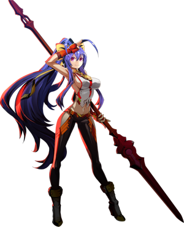

◈ JACK-OF-ALL-TRADES · CROWD CONTROL
Mai
BlazBlue: Entropy Effect — Персонаж
75
Атака
60
Защита
70
Скорость
70
HP
★★☆
Сложность
Средний
Тип боя
Mai — персонаж без явной специализации. Она может как стремительно перемещаться по экрану, так и оставаться неподвижной, нанося огромный урон. Игра за Mai требует понимания, когда переключаться между спамом неуязвимых движений для контроля толпы и использованием уникальной стойки Ayanishiki для сброса MP и комбинирования врагов.
Make Haste
Ayanishiki
Javelin Bounce

01
Досье персонажа
Имя
Mai Natsume
Титул
Gallia Sphyra: Outseal
Оружие
Копьё (Javelin)
База HP / Атака
1020 / 168 (25 потенциалов, +500%)
Роль
Универсал / Контроль толпы
Особенность
Ayanishiki, рикошеты копья, вихри
Боевые характеристики
ATK75
DEF60
SPD70
HP70
RANGE85
SKILL80
Талант (Talent)
Make Haste
После использования навыка урон базовой атаки увеличивается на +130% на 3 секунды. Короткий, но мощный бафф, который может значительно увеличить общий DPS при правильном использовании.
После использования навыка урон базовой атаки увеличивается на +130% на 3 секунды. Короткий, но мощный бафф, который может значительно увеличить общий DPS при правильном использовании.
02
Навыки и приёмы
Maple Blossom
Legacy Skill 1
Призывает два вихря, которые вращаются по кругу, нанося урон и притягивая врагов.
Мощный инструмент контроля толпы — мелкие враги редко получают шанс вас перегрузить.
Урон увеличивается с уровнем.
Maple Gust
Legacy Skill 2
Призывает большой вихрь, который движется вперёд, нанося урон и притягивая врагов.
Проходит дальше и даёт больше пространства для выхода из плохих ситуаций.
Дальность и урон растут с уровнем.
Moon Blossom
Потенциал: Up + Jump
Mai выполняет более высокий прыжок, делающий её неуязвимой.
Использование в воздухе сбрасывает лимит [Airborne] Attack.
Ключевой инструмент для мобильности и выживания.
[Airborne] Attack & Sanzashi
Воздушная атака
Mai выполняет одиночный рубящий удар вниз. Sanzashi: [Airborne] Attack > Attack или
[Airborne] Up + Attack — короткий выпад вперёд. С потенциалами: посылает ударные волны,
разрушает Super Armor, даёт неуязвимость.
Sylvan Hurricane Assault
[Airborne] Attack x3 / Down + Attack
Mai выполняет plunging attack с копьём. С потенциалами: увеличенная область,
разрушение Super Armor, неуязвимость. С Ayanishiki: притягивает врагов к Mai.
Dash & Himeyuri / Suzuran
Уникальный Dash
Короткий рывок вперёд с Dash Invulnerability. Himeyuri: [Ground] Dash > Up + Dash —
дополнительный выпад, делающий Mai воздушной. Suzuran: [Airborne] Dash > Down + Dash —
выпад по диагонали вниз. До 3 выпадов подряд.
Skill: Javelin Throw
[Ground] / [Airborne] Skill
Mai бросает копьё вперёд (MP:100). Пробивает всех врагов до стены.
С потенциалами: восстанавливает MP при возвращении; притягивает врагов к стене;
можно менять угол (Hold Skill + Left/Right) — копьё рикошетит от пола и стен,
увеличивая урон с каждым отскоком. При возврате копья можно нажать Skill снова
для более мощного броска (до 3 раз).
[Ground] Up + Skill: Giant Tornado
Skill
Mai призывает гигантский вихрь перед собой (MP:100). Медленно движется вперёд,
собирая врагов. С потенциалами: вихрь больше, дополнительный вихрь на 4-м ударе
комбо или Heavy Strike.
Thousand Spears & Flurry of the Winter Moon
[Ground] Hold Down + Mash Attack
Заменяет 3-й удар наземного комбо на серию быстрых уколов. Flurry of the Winter Moon:
во время Thousand Spears нажмите Skill — Mai выполняет огромный рубящий удар,
делающий её полностью неуязвимой (MP:30).
Triple Jump & Invincibility
Потенциал
Mai может совершать тройной прыжок. При получении урона может немедленно
восстановиться прыжком и стать неуязвимой на 1 секунду.
Ayanishiki Stance
Уникальная механика
Особая стойка Mai, активируемая через определённые потенциалы. Позволяет
быстро расходовать MP для мощных комбо и запуска врагов. Ключевая механика
для максимизации урона.
03
Основные механики
Ayanishiki — стойка для комбо
Уникальная стойка Mai, которая открывает доступ к мощным комбо и позволяет быстро
расходовать MP для максимального урона. В этой стойке Mai может выполнять специальные
приёмы, такие как усиленный Sylvan Hurricane Assault, который притягивает врагов.
Правильное использование Ayanishiki — ключ к освоению Mai и раскрытию её полного
потенциала.
Рикошеты копья
При броске под углом копьё Mai отскакивает от пола и стен, увеличивая урон
с каждым отскоком. Это позволяет наносить огромный урон в замкнутых пространствах.
Восстановление MP
С потенциалами копьё Mai восстанавливает MP при попадании во врагов как на пути
вперёд, так и при возвращении. Это позволяет ей постоянно использовать навыки.
Мобильность и неуязвимость
Многие движения Mai дают ей полную неуязвимость: Moon Blossom, Sanzashi,
Sylvan Hurricane Assault, Flurry of the Winter Moon. Это делает её чрезвычайно
живучей при правильной игре.
Контроль толпы
Maple Blossom, Maple Gust и гигантский вихрь — мощные инструменты контроля толпы.
Они притягивают и обездвиживают врагов, позволяя Mai безопасно наносить урон.
04
Советы по игре
- 🍁Используй Make Haste перед комбо. +130% к урону базовой атаки на 3 секунды — огромный бафф. Активируй навык, затем начинай комбо.
- 🍁Бросай копьё под углом в замкнутых пространствах. Рикошеты от стен и пола увеличивают урон с каждым отскоком — идеально против боссов у стены.
- 🍁Освой Ayanishiki. Эта стойка открывает доступ к самым мощным комбо Mai. Тренируйся переключаться в неё во время боя.
- 🍁Используй вихри для контроля толпы. Maple Blossom и Maple Gust не дают мелким врагам перегрузить вас. Размещай их в узких проходах.
- 🍁Злоупотребляй неуязвимостью. Moon Blossom, Sanzashi и Sylvan Hurricane Assault дают полную неуязвимость — используй их для избегания опасных атак.
- 🍁Thousand Spears + Flurry of the Winter Moon — твой бурст. Это комбо наносит огромный урон и делает Mai неуязвимой на время выполнения.
- 🍁Mai хороша для изучения игры. Её универсальность и множество неуязвимых движений делают её forgiving для новичков.